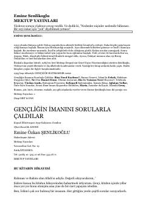

GİGençlerin inanç dünyasındaki sorulara İslamî perspektiften cevaplar sunan düşündürücü bir eser.
Bu eser, gençlerin zihnini kurcalayan dini ve felsefi sorulara cevap aramak amacıyla kaleme alınmıştır. Yazar, dönemin yaygın şüpheleri ve inanç meseleleri üzerine gençleri bilinçlendirmeyi ve İslam'ı savunmayı hedeflemektedir. Kitap, yazarın cezaevi sürecinde yazdığı ve geniş kitlelere ulaştığı anı ve araştırma niteliğindeki önemli eserlerinden biridir.